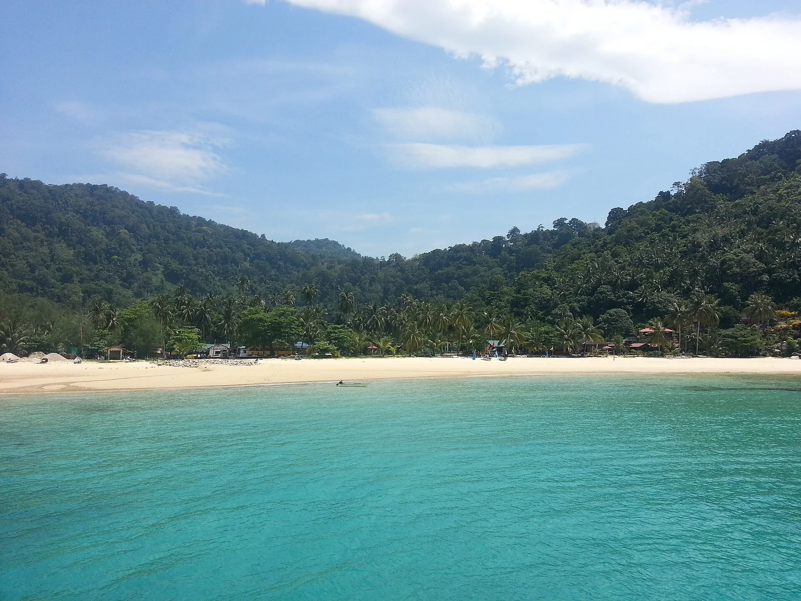

Île Tioman
Pahang, Malaisie · plongée, snorkeling

Île montagneuse entourée de parc marin, avec des sites de plongée variés et des villages tranquilles.
- Lieu
- Pahang, Malaisie
- Niveau
- Débutant
- Activités
- plongée, snorkeling
- Type d'eau
- Mer / océan
- Coordonnées
- 2.79, 104.16 (position approximative du secteur)
Dangers à connaître
- Parc marin protégé.
- Courants sur les pinacles.
Le conseil d'Ocean Buddy
Choisis un village selon ton envie : animé à ABC, calme à Juara.
Ouvrir dans Ocean Buddy Télécharger sur l'App Store
Source : Fiche Ocean Buddy · septembre 2026 · à vérifier localement.